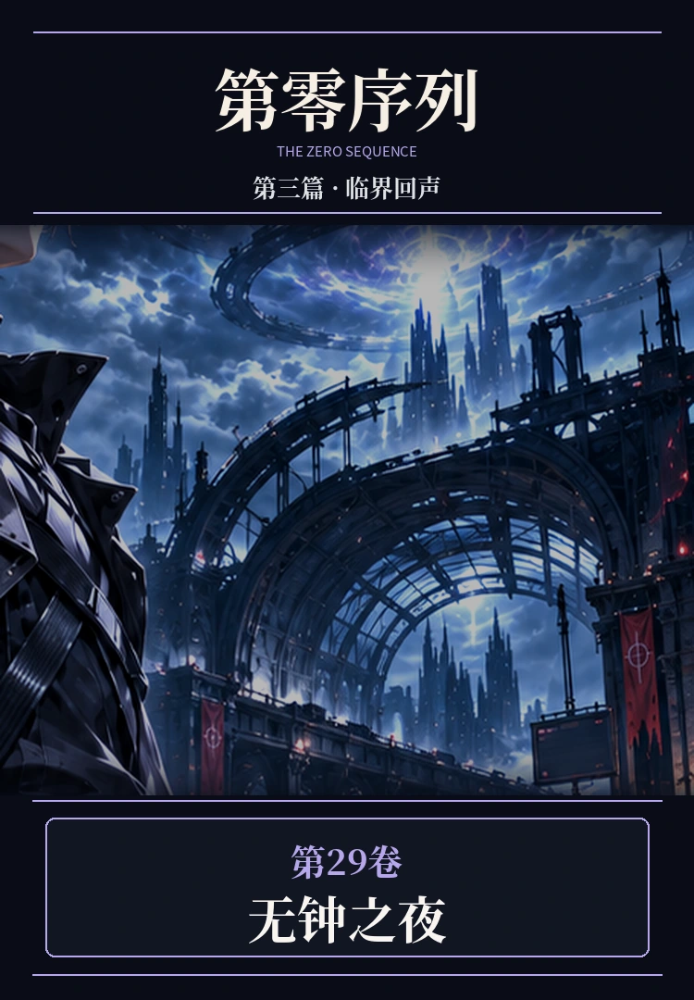

PART THREE · VOLUME 29 · FULL 10 CHAPTERS
第二十九卷《无钟之夜》

顾长渊抵达极北无钟站，见到秦栖与祁望留下的刻盘。白砾猎团与沉弦相继介入，镜海伏杀和无钟守卫掀起新的战斗，隐藏的第零刻痕指向无法轻易解释的回声。
PART THREE · VOLUME 29 · FULL 10 CHAPTERS

顾长渊抵达极北无钟站，见到秦栖与祁望留下的刻盘。白砾猎团与沉弦相继介入，镜海伏杀和无钟守卫掀起新的战斗，隐藏的第零刻痕指向无法轻易解释的回声。